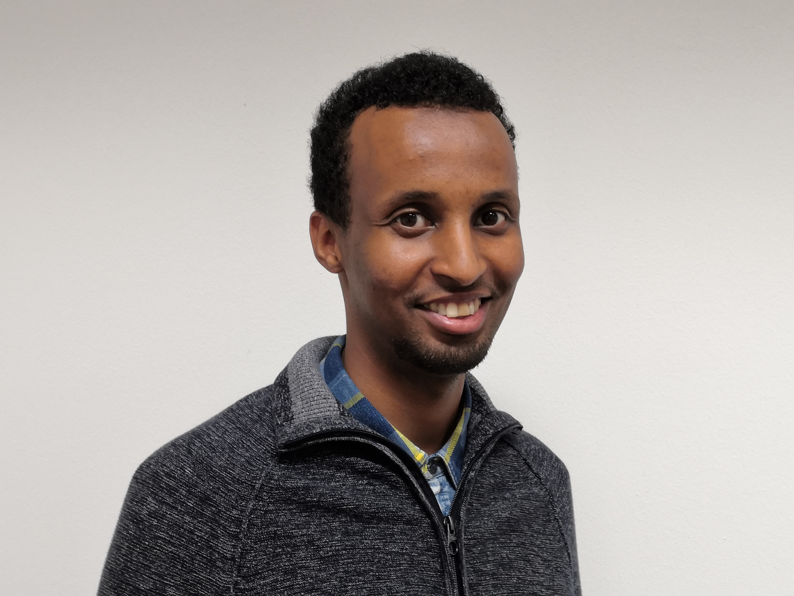

|  |
Mohammed HAJI ADAM, BAEmail: mo.85@gmail.com |
| Geburtsdatum | 01.05.1985 |
| Staatsbürgerschaft | Somali |
| Familienstand | ledig |
| Aufenthaltsstatus in Ö | Freier Zugang zum Österreichischen Arbeitsmark |
| Einreise nach Österreich | 2015 |
| 2020-jetzt | Arbeiter im Lager bei Kwizda Pharma |
| 2018 – 2019 | Swarco AG, Tirol als Netzwerkadministrator
|
| 2018 – 2019 | Kompetenzcheck ibis acam durch AMS |
| 2015 – 2018 | Gemeindeamt Pfunds, Tirol als Hilfskraft |
| 2002 – 2005 | Mathenachhilfer, Damaskus, Syrien Kleingruppenbetreung Kinder von der 6 bis zur 9. Schulstufe |
| 2005 – 2010 | Bachelorstudium: Informationtechnologie, Technik
|
| 2018 – 2019 | Deutschkurs B1, VHS , Tirol |
| 2018 | Deutschkurs A2, BFI , Tirol |
| 2011 – 2012 | CCNA R&S Kurs in Damaskus, Syrien |